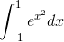
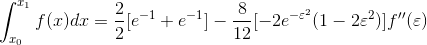
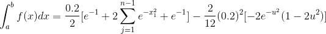
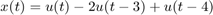

Práctica 4 Convolución y correlación
Contents
- Objetivos
- Introducción
- Teorema Fundamental del Calculo
- Formulas cerradas de Newton-Cotes
- Regla de simpson (n=2)
- Regla de tres octavos de Simpson (n=3)
- Regla compuesta del trapecio
- Regla compuesta de Simpson
- Cuadratura gaussiana
- Ejercicio 1
- Resultado analitico
- Ejercicio 2
- Resultado analitico
- Grafica de la señal (c)
- Grafica de la señal (d)
- 3.-Convolucion (c) con (d)
- 4.-Correlacion (c) con (d)
- 5.-Convolucion de (c) con (d) usando el comando conv de MATLAB
- Referencias
- Integrantes del equipo
- Alarcon Camacho Aldo yosef
- Monroy Reza Rene
- Ochoa Velasquez José Abraham
Objetivos
- Manipulación de instrucciones en MATLAB
- Simular convoluciones y correlaciones de señales continuas
- Simular convoluciones y correlaciones de señales discretas
Introducción
Simulación numerica de integrales
Teorema Fundamental del Calculo
El area definidada por la gráfica de la función f(x). El teorema Fundamental del cálculo (En una de sus versiones).Si f es integrable y:
Entonces
Encontrar F muchas veces es dificil o imposible, esto mediante Técnicas de integración como cambio de variable, integracion por partes, etc.
Ejemplo:
Realizar la integral de la funcion f(x)en el intervalo [-1,1]

Como se puede observar el problema no tiene solucion con el metodo de integracion, ya que no tiene solucion usando algun metodo de integracion. Para esto usamos una aproximacion con un polinomio constante. Por ejemplo:
Si observamos las graficas:
El area del polinomio aproximado esta definida por la siguiente expresion
El resultado de la integral usando otros algoritmos de calculo es:

Finalmente , podemos concluir que es una buena aproximacion el polinomio propuesto, y que muchas veces la integracion , no es posible llevarse a cabo para ciertos casos particulares,pero podemos obtener un aproximado proponiedo polinomios aproximados a la funcion que se desea integrar.
Formulas cerradas de Newton-Cotes
Formula cerrada de (n+1) Puntos de Newton-Cotes

Regla del trapecio (n=1)


Retomando el ejemplo anterior en el que:
Y solcitabamos el calculo de:
Podemos usar la regla del trapecio para hacer el calculo, en donde los valores para sustituir en la expresion principal quedan de la siguiente forma:

Sustituyendo en la exprecion principal obtenemos lo siguiente


Regla de simpson (n=2)

Retomando el ejemplo anterior en el que:
Y solcitabamos el calculo de:
Podemos usar la regla de simpson para hacer el calculo, en donde los valores para sustituir en la expresion principal quedan de la siguiente forma:
Sustituyendo en la expresión principal, tenemos:

Regla de tres octavos de Simpson (n=3)


Retomando el ejemplo anterior en el que:
Y solcitabamos el calculo de:
Podemos usar la regla de simpson para hacer el calculo, en donde los valores para sustituir en la expresion principal quedan de la siguiente forma:
Sustituyendo en la Expresion principal, tenemos:
Regla compuesta del trapecio
Numero de subTrapecios

Paso

Retomando el ejemplo anterior en el que:
Y solcitabamos el calculo de:
Podemos usar la regla de Trapecios compuesta para hacer el calculo, en donde los valores para sustituir en la expresion principal quedan de la siguiente forma:
Sustituyendo en la expresion principal, se obtiene:

Regla compuesta de Simpson

n, par número de subintervalos
Paso
Retomando el ejemplo anterior en el que:
Y solcitabamos el calculo de:
Podemos usar la regla de simpson compuesta para hacer el calculo, en donde los valores para sustituir en la expresion principal quedan de la siguiente forma:
Sustituyendo en la expresion principal
Cuadratura gaussiana
Dado que no siempre se quiere integrar en el intervalo de [-1,1], se hace un ajuste a la integral de dicha funcion para poder hacer cuadratura gaussiana, de esta forma se obtiene la siguiente expresión
% Retomando el ejemplo anterior en el que:
Y solcitabamos el calculo de:
Podemos usar la Cuadratura Gaussiana para hacer el calculo obteniendo lo siguiente
Ejercicio 1
PR04-1 Realiza la convolución de las siguentes señales
f=@(t) exp(-t).*(t>=0 & t<1); g=@(t) t.*(t>=-1 & t<=1); convconm(f,g)
Resultado analitico
Ejercicio 2
PR05-e Realizar la autocorrelación de

k=@(t) 1*((t>=0&t<3) - (t>=3&t<4)); convconm1(k);
Resultado analitico
Grafica de la señal (c)
figure
f =@(n1) 3.*n1;
n1=-3:3;
stem(n1,f(n1),'LineWidth',2)
Grafica de la señal (d)
figure
f2=@(n3) abs(2.*n3);
n3=-2:2;
stem(n3,f2(n3),'LineWidth',2)
3.-Convolucion (c) con (d)
Problema 3.1.1 Lathi
n=-4:4; a=[0 -9 -6 -3 0 3 6 9 0]; b=[0 0 4 2 0 2 4 0 0]; convdisc([n;a],[n;b])

4.-Correlacion (c) con (d)
Problema 3.1.1 Lathi recordemos que la correlacion entre y  es , entonces es posible invertir la señal en (d),para hacer la operacion correspondiente, como esta es par, no presenta ningun cambio, por lo que la correlación equivale al resultado de la convolución
es , entonces es posible invertir la señal en (d),para hacer la operacion correspondiente, como esta es par, no presenta ningun cambio, por lo que la correlación equivale al resultado de la convolución
n2=-4:4; f=[0 -9 -6 -3 0 3 6 9 0]; g=[0 0 4 2 0 2 4 0 0]; convdisc( [n2;f], [n2;g] )
5.-Convolucion de (c) con (d) usando el comando conv de MATLAB
figure
c=[0 -9 -6 -3 0 3 6 9 0];
d=[0 0 4 2 0 2 4 0 0];
w=conv(c,d);
n4=-8:8;
stem(n4,w,'LineWidth',2)

Referencias
- Cleve Moler. (2004). The Origins of MATLAB. 2019, de MathWorks Sitio web: https://www.mathworks.com/company/newsletters/articles/the-origins-of-matlab.html
- maslinux. (2017). 3 Alternativas de Código abierto a MATLAB. 2019, de maslinux Sitio web: https://maslinux.es/3-alternativas-de-codigo-abierto-a-matlab/
- B. P. Lathi, Linear systems and signals,Oxford University Press